Sports en France
Les pays de la Loire relèvent le défi
Depuis 2012, nous sommes les champions ! Avec près de 1 licencié pour 3 habitants, les Pays de la Loire méritent le titre de région la plus sportive de France. Nous avons voulu comprendre ce qui expliquait cette place sur la plus haute marche du podium. La réponse dans notre infographie interactive. Et parce que nous sommes fair-play, vous pourrez aussi comparer ces résultats avec ceux des autres régions.
Classement par sport et par région en 2012

- 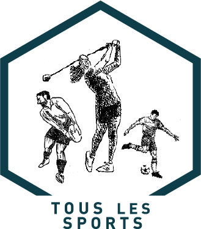
-

-

- 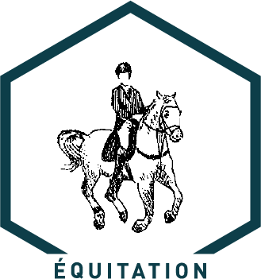
- 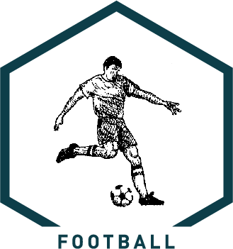
- 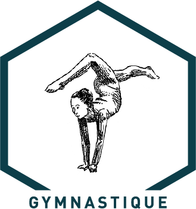
- 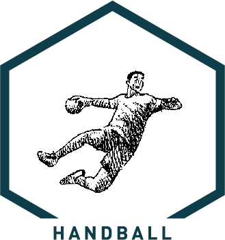
-

- 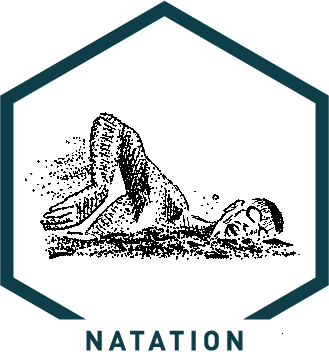
- 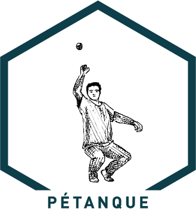
-

- 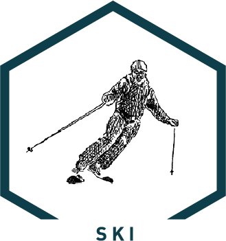
- 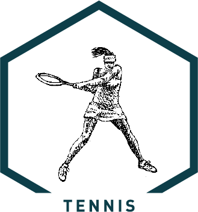
- 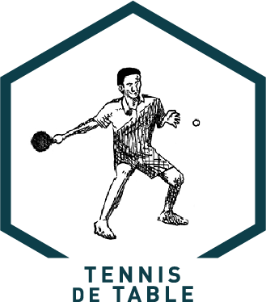
- 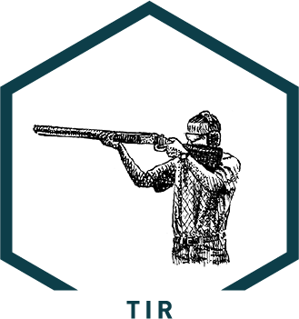
- 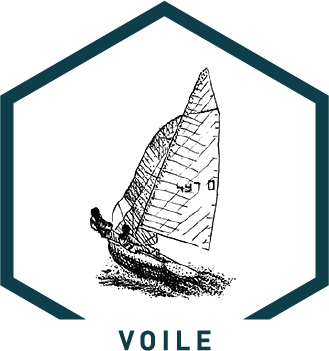
0

|
Plus grand nombre de licenciés pour 10 000 habitants dans la catégorie |
 |
|
|||
|
|
LES TROIS RÉGIONS LES PLUS SPORTIVES DE 2009 À 2012


PAYS DE LA LOIRE EN TÊTE : L'AVIS D'UN EXPERT
Les Pays de la Loire ont toujours occupé une place de meneur dans le panorama de la pratique sportive française. Gildas Loirand, sociologue, enseignant - chercheur et maître de conférences à l' UFR STAPS, revient sur trois des raisons qui font de notre région une des plus dynamiques de France.
Le volontarisme politique
Le volontarisme politique en Pays de la Loire est historique et a toujours joué un grand rôle dans le développement du sport. Plus marqué encore en Loire-Atlantique, c’ est un des premiers départements de France, dès 1974, à développer un service d’animation sportif départemental. On affecte des techniciens fonctionnaires dans les cantons afin de proposer une pratique alternative à celle proposée par les clubs traditionnels. Les animateurs sportifs départementaux contribuent ainsi largement au développement des pratiques telles que le tennis de table.
La fusion des clubs
La fusion de certains clubs au fil des années en Pays de la Loire a contribué à un accroissement certain du niveau d' excellence sportive. Elle a permis de concentrer des activités, des équipes, et de mettre en commun des ressources économiques et matérielles. Parmi les plus populaires, figure le club féminin Rezé-Nantes Basket qui évolue en 1ère division (Pro A).
Les sports affinitaires

Les nombreux conflits idéologiques ayant opposé patronages laïques et catholiques ont eux aussi influencé la diffusion du sport dans la région. Dans leurs affrontements, les deux instances ont toujours eu en commun la volonté affirmée de structurer le temps libre des écoliers, en leur donnant notamment accès à la pratique sportive. De cette manière, les sports tels que la gymnastique et le basket-ball se sont rapidement popularisés. L’influence du patronage catholique est encore présente aujourd’hui, puisque L’Hermine, club phare du basket nantais, et le FC Nantes en sont issus.

L'évolution du nombre de licenciés dans votre département
Loire Atlantique
TOTAL (2012)
0
LES PAYS DE LA LOIRE DANS LE HAUT DU PANIER
Après 25 années d’expérience dans l’arbitrage de haut niveau, Pierre-Yves Bichon est aujourd’hui vice-président du club de basket l’Hermine de Nantes. Il nous donne son avis sur l’engouement que suscite le basket en Pays de la Loire.
La région Pays de la Loire est la région française qui compte le plus grand nombre de licenciés en basket-ball. Un mot à dire sur ce constat ?
Nous avons une pyramide des clubs de basket très bien étagée en Pays de la Loire, de la masse à l'élite, et elle est historique. Les clubs de Cholet et du Mans en première division sont de vraies locomotives. Avec les équipes de Nantes, Angers et Challans, respectivement en deuxième, troisième et quatrième division, l’ancrage de cette élite du basket dans la région est très ancien. Elle draine un grand nombre de joueurs et de sympathisants du basket. Quant au basket féminin, il est excellemment représenté également, notre région étant celle qui enregistre le plus de pratiquantes.
Que pensez vous de l’engagement des collectivités en faveur du basket-ball dans les Pays de la Loire ?
Depuis toujours, les collectivités et notamment la Région, ont su appuyer la démarche des clubs professionnels, ayant bien compris leur rôle de chef de file auprès de la masse. Quand les collectivités supportent et soutiennent nos démarches, nos partenaires privés le ressentent et cette caution publique les amènent à considérer les projets des clubs comme sérieux et méritant qu'ils s'y investissent. C'est un véritable cercle vertueux.
Portrait
Pierre-Yves Bichon a exercé durant 25 ans la fonction d’arbitre de Pro A (arbitrant les finales lors de ses 15 dernières années). Evoluant aussi à l’international pendant 13 ans, il a terminé sa carrière en beauté, en arbitrant en 2010 à Bercy la finale entre Cholet et Le Mans, deux équipes de sa région. La fonction de vice-président qu’il occupe depuis trois ans a été l’occasion d’effectuer une reconversion dans le sport de haut niveau, et de mettre à profit, à l'échelon nantais, toutes ses expériences en France et à l’international.
LA RÉGION AUX J.O DE LONDRES 2012
Nom :
Discipline :
Club :
Résultats :
Le saviez vous ?
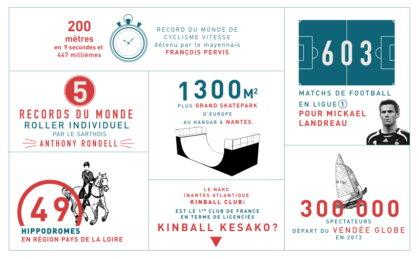
Le Kinball : un sport totalement à l'Ouest
Un ballon de 1,22 mètres de diamètre, 3 équipes sur un même terrain et des glissades spectaculaires.
Ce sport insolite s’appelle le kinball. 400 licenciés en France dont une grande majorité dans l’Ouest. Reportage sur le Nantes Atlantique Kinball Club.
Crédits
Réalisation (Polytech Nantes) : Thomas Pradié, Benjamin Cavy, Manuela Guerin
Design (AGR L'école de l’image) : Alexandre Forget, Baptiste Denéchère
Editorial (SciencesCom) : Laura Véron, Suzie Le Vagueresse, Tiphaine Honnet
Avec la participation et l'aide de Nicolas Dumez (région Pays de la Loire)
Sources : INSEE, CROS Pays de la Loire, ORES Pays de la Loire